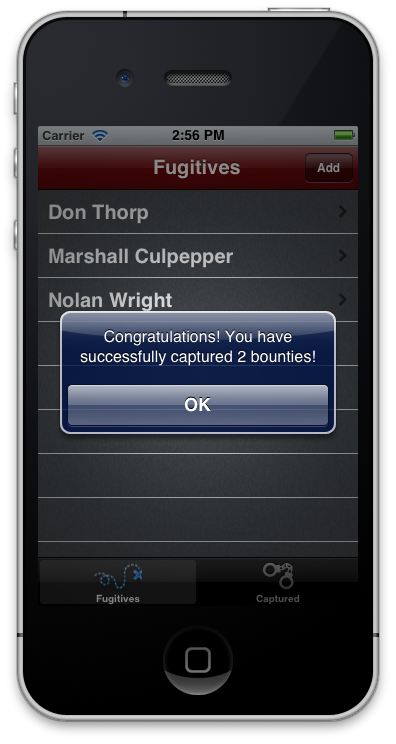

Lab - Working with Remote Data
Mission: In this lab assignment, you will enhance the TiBountyHunter application by retrieving a list of fugitives from a remote web service and adding them to the local database. Once a fugitive is captured, you'll notify the remote web service, which keeps count of busted fugitives.
Specification: Start with the TiBountyHunter project you created for the last assignment. We need to implement the logic to get the list of fugitives from the remote URL. This Web service will return that list as an array of objects in JSON format, where each object represents a fugitive. Each object has one property, "name", which is a string with the full name of the fugitive. Once this list is retrieved, we store each fugitive in the local DB, using the functions created in the previous lab. This operation should be executed at the start of the app, and only one time. Each time the user clicks on the "Capture" button, a request will be sent to the remote web service. It will pass the device's MAC address as a parameter. The web service tracks the number of fugitives busted by the hunter-owner of that device, and returns the value.
- Retrieve bounties from http://bountyhunterapp.appspot.com/bounties (via GET call).
- Post captured bounties to the same address (via POST).
| 1. Open the TiBountyHunter project you created for the last assignment, or download the starting point code and import it as a new project in Studio: http://assets.appcelerator.com.s3.amazonaws.com/app_u/code/TiBH255.zip | |
2. In the 'lib' folder, create a network module. It should contain two exported methods:
|
|
| 3. Edit lib/db.js. At the end of the file, add a conditional block. If an app property named 'seeded' has not been set, require in your network library. Call the getFugitives() method. Pass to it a function that loops through the resulting data array and for each member calls the db.add() function. Within that callback, set the 'seeded' application property to any value so that this block won't be executed the next time the app is run. | |
| 4. Update the /ui/common/DetailWindow.js file. In the Capture button's click handler, require your network library. Pass to it the device's MAC address and a callback function. That function should alert() the data returned from the network service. It should also close the window after a two-second delay on Android or immediately on iOS and Mobile Web. | |
| 5. Build your app for the iOS simulator or Android emulator. Correct any problems that exist. | |
Summary
In this lab, you connected TiBountyHunter to a remote web service. On the app's first run, it seeds its database from a remote data store. As the user captures fugitives, the web service counts their actions and returns a simple message. These tasks illustrate the types of network interactions your real-world apps might implement.
Resources
- API docs: Network: http://docs.appcelerator.com/titanium/2.0/index.html#!/api/Titanium.Network
- API docs: Properties http://docs.appcelerator.com/titanium/2.0/index.html#!/api/Titanium.App.Properties
- Guides: Remote Data: http://docs.appcelerator.com/titanium/2.0/index.html#!/guide/Working_with_Remote_Data_Sources
- Finished code: See the next lab or GitHub